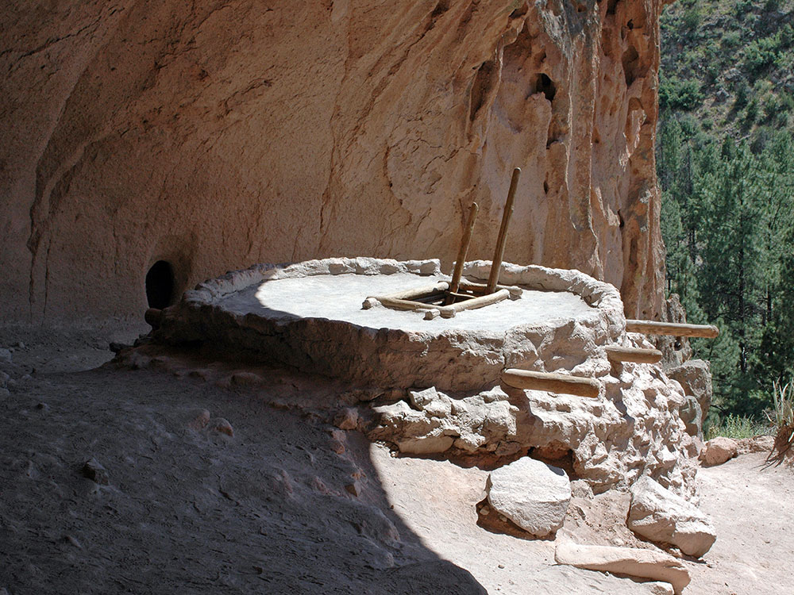
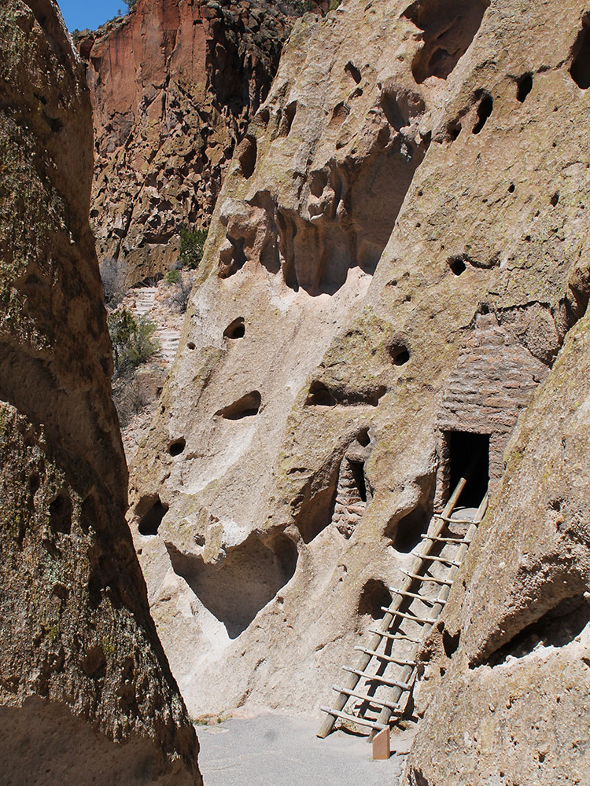
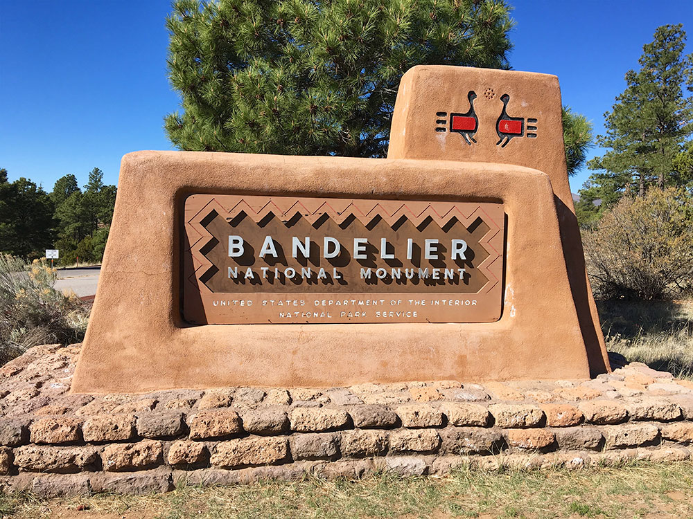
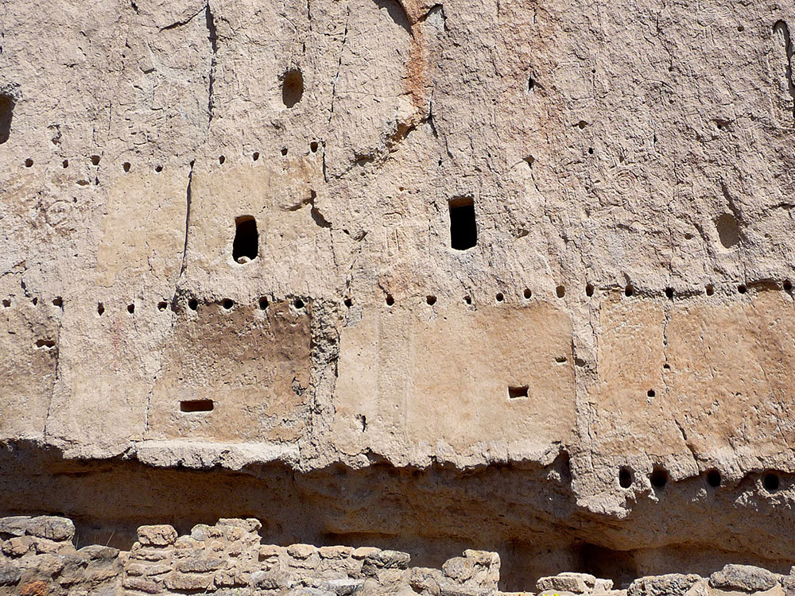
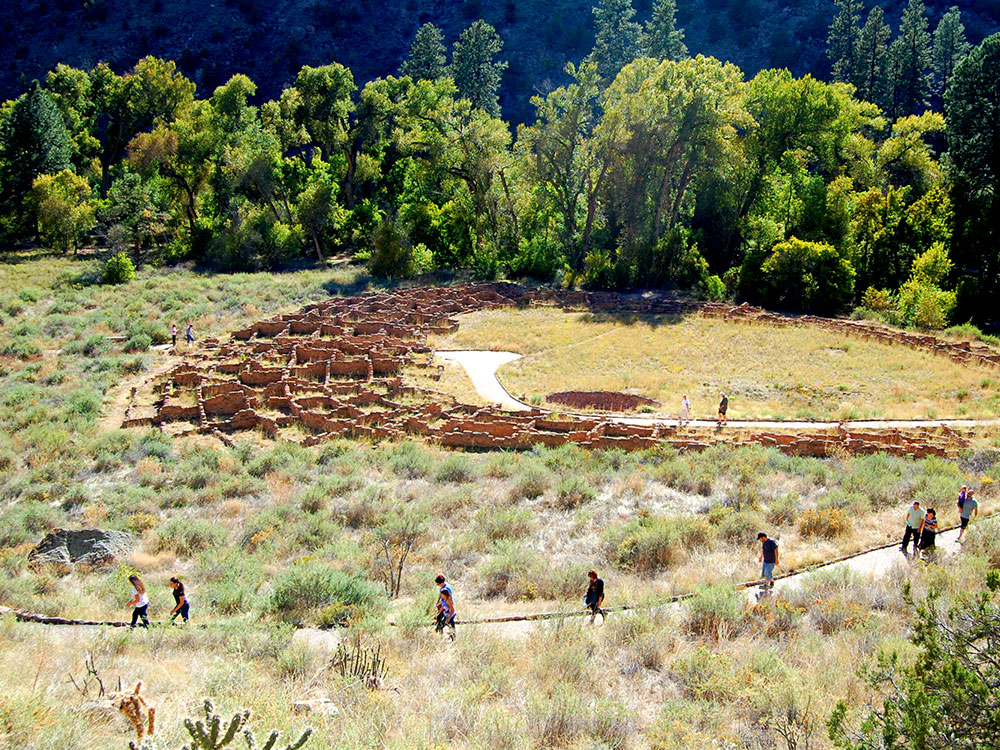
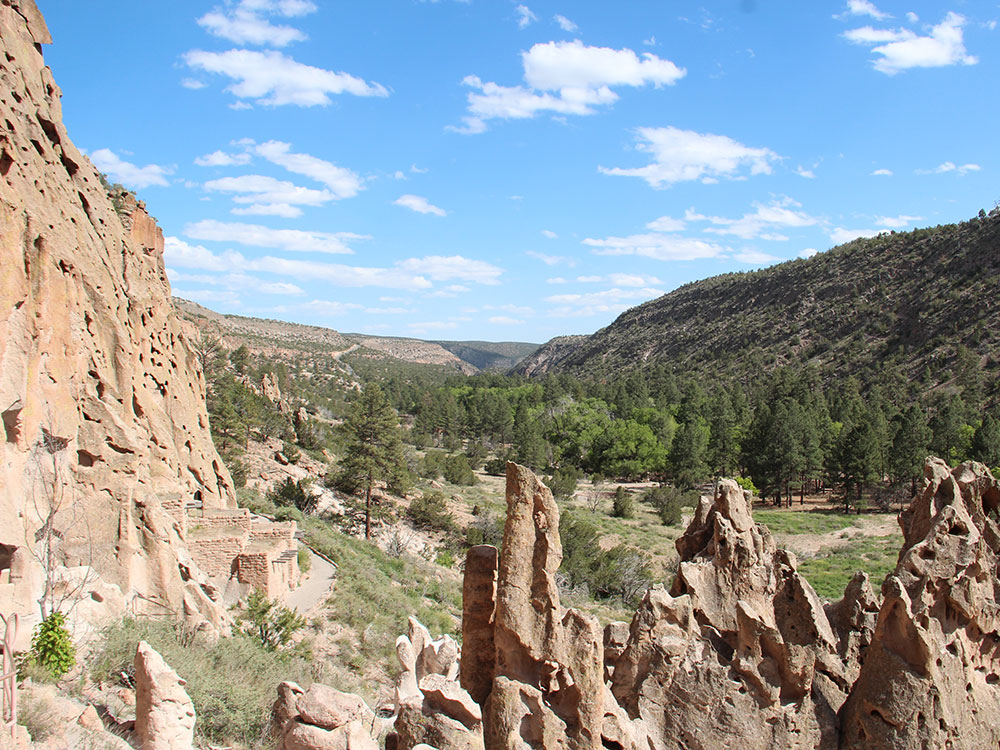
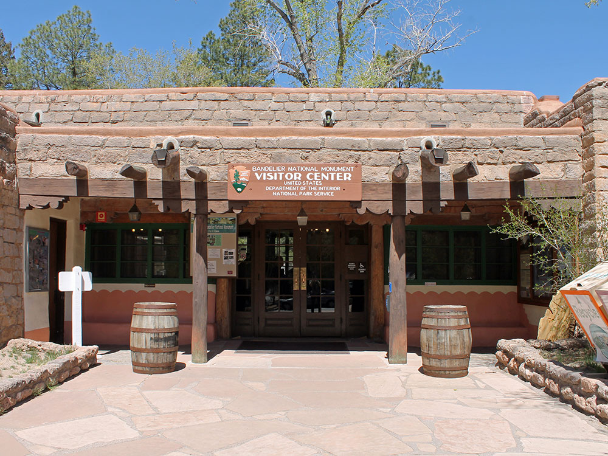

33,677-acre monument near Los Alamos, New Mexico, preserving the homes and territory of the Ancestral Puebloans, dating between 1150 and 1600 AD
General Information
Visitor Center: 9am to 5pm
Closed Christmas Day and occasionally during severe weather
Motorcycle: $20
Per Person (walk/bike): $15
How to Get There
From Santa Fe (40 mi): Take US-84/285 north toward Pojoaque, merge onto NM-502 toward Los Alamos, then take NM-4 south toward White Rock and follow signs to Bandelier National Monument.
Overview
Bandelier National Monument protects 33,677 acres of canyons and mesas in the Pajarito Plateau of northern New Mexico, preserving the homes, kivas, rock art and landscape of the Ancestral Pueblo people who lived here from about 1150 to 1550. The monument is famous for the cliff dwellings, or "cavates," carved into soft volcanic tuff in Frijoles Canyon, and for the circular ruins of Tyuonyi Pueblo on the canyon floor. The tuff was deposited by eruptions of the Valles Caldera more than a million years ago, and the area is still home to the descendants of those who lived here, including the people of Cochiti, San Ildefonso and other Pueblos. President Woodrow Wilson proclaimed the national monument in 1916, naming it for Swiss-American anthropologist Adolph Bandelier, and about 70 percent of it is protected as wilderness. Visitors come to walk the easy Main Loop Trail, climb ladders into cave rooms, hike to waterfalls and the Rio Grande, and enjoy a mix of archaeology and mountain scenery near Los Alamos.
Access
The main entrance is off NM-4 near White Rock, a short drive from Los Alamos, roughly 45 minutes to an hour from Santa Fe and about 1.5 hours from Albuquerque. Almost everyone arrives by car on paved roads. From mid-May to mid-October, the Frijoles Canyon visitor area is typically served by a free shuttle from the White Rock Visitor Center, because parking in the canyon is limited, and private vehicles are generally not allowed into the canyon during that time. Outside shuttle season, visitors can drive in and park at the visitor center, though winter weather may close the access road. The separate Tsankawi section, with petroglyphs and a mesa-top trail, is reached by car off NM-4 near Los Alamos.
Seasons
The monument is open year-round, and summer is the busiest season, with shuttle service and ranger programs. Spring and fall bring comfortable temperatures and fewer crowds, and fall color from cottonwoods and aspens brightens the canyon. Afternoon thunderstorms are common in July and August, and flash floods can occur in the canyon. Winter brings snow and cold, which can close trails and the access road at times, but the ruins look especially striking dusted in snow. Alcove House and some trails may be closed for weather, maintenance or safety reasons, so check current conditions with the park.
Things to Do
Step Into the World of the Ancestral Pueblo People
Bandelier National Monument is one of the most accessible places in the Southwest to see how Ancestral Pueblo people lived. A short walk through Frijoles Canyon takes visitors past village ruins, cave rooms, kivas and petroglyphs.
Walk the Main Loop Trail
The easy Main Loop Trail leads from the visitor center past Tyuonyi Pueblo, the Big Kiva, Talus House and Long House. Visitors can climb optional ladders to enter cave rooms and see soot-darkened ceilings and painted walls.
Climb to Alcove House
Alcove House is a large natural alcove about 140 feet above the canyon floor, reached by a series of steep wooden ladders and stone steps. At the top are a reconstructed kiva and wide views of Frijoles Canyon.
Hike to the Waterfalls and the Rio Grande
The Falls Trail descends through the canyon to two waterfalls and continues toward the Rio Grande. Flow is best in spring and after summer rains, and the hike back up is more strenuous than it looks.
Visit Tsankawi and See Petroglyphs
The detached Tsankawi section preserves an unexcavated ancestral village on a mesa top. A loop trail follows ancient footpaths worn deep into the tuff and passes petroglyphs and cave dwellings.
Top Trails
Main Loop Trail
Length: Approximately 1.2 miles loop
Elevation Gain: Minimal to moderate
Difficulty: Easy
This paved loop is the signature walk at Bandelier. It passes Tyuonyi Pueblo, the Big Kiva and cliff dwellings, with optional ladders into several cave rooms.
Alcove House Trail
Length: Approximately 1.2 miles round trip from the visitor center
Elevation Gain: Moderate
Difficulty: Moderate
This trail extends from the Main Loop to the high alcove, including a climb of more than 140 feet on ladders and stairs. It is not recommended for visitors who are afraid of heights.
Falls Trail
Length: Approximately 3.4 miles round trip to Upper Falls
Elevation Gain: Moderate
Difficulty: Moderate
This canyon hike follows Frijoles Creek past cottonwoods and rock walls to Upper Falls, with views of the lush riparian corridor. Hikers who continue toward the Rio Grande face a longer, more strenuous return climb.
Visitor Centers
The Bandelier Visitor Center in Frijoles Canyon is the park's main stop and the start of the Main Loop Trail. It houses a museum with Ancestral Pueblo pottery, tools and exhibits on the people of the canyon, plus a bookstore, restrooms, a short film and rangers who can advise on trail conditions and ladders. A separate White Rock Visitor Center in the nearby community of White Rock is the shuttle departure point in the summer and offers information and exhibits. Hours vary seasonally, so check the National Park Service website for current times.
Camping and Lodging
The Juniper Family Campground sits near the visitor center and offers tent and RV sites with restrooms but no hookups, and a group campground is also available. There is no lodging in the monument. Hotels, inns and restaurants are in Los Alamos and White Rock, within 15 to 20 minutes, with more options in Española and Santa Fe, about an hour away. Jemez Springs offers small inns, cabins and hot springs about 45 minutes west, and national forest campgrounds in the Jemez Mountains are also nearby. Check each property's website for current availability and reservation rules.
Bandelier was designated by President Woodrow Wilson as a national monument on February 11, 1916, and named for Adolph Bandelier, a Swiss-American anthropologist, who researched the cultures of the area and supported preservation of the sites. The park infrastructure was developed in the 1930s by crews of the Civilian Conservation Corps and is a National Historic Landmark for its well-preserved architecture. The National Park Service cooperates with surrounding Pueblos, other federal agencies, and state agencies to manage the park.
Geography and geology
In October 1976, roughly 70% of the monument, 23,267 acres (9,416 ha), was included within the National Wilderness Preservation System. The park's elevations range from about 5,000 feet (1,500 m) at the Rio Grande to over 10,200 feet (3,100 m) at the summit of Cerro Grande. The Valles Caldera National Preserve adjoins the monument on the north and west, extending into the Jemez Mountains.
Much of the area was covered with volcanic ash (the Bandelier Tuff) from an eruption of the Valles Caldera volcano 1.14 million years ago. The tuff overlays shales and sandstones deposited during the Permian Period and limestone of Pennsylvanian age. The volcanic outflow varied in hardness; the Ancestral Puebloans broke up the firmer materials to use as bricks, while they carved out dwellings from the softer material.
Human presence in the area has been dated to over 10,000 years before present. Permanent settlements by ancestors of the Puebloan peoples have been dated to 1150 CE; these settlers had moved closer to the Rio Grande by 1550. The distribution of basalt and obsidian artifacts from the area, along with other traded goods, rock markings, and construction techniques, indicate that its inhabitants were part of a regional trade network that included what is now Mexico. Spanish colonial settlers arrived in the 18th century. The Pueblo Jose Montoya brought Adolph Bandelier to visit the area in 1880. Looking over the cliff dwellings, Bandelier said, "It is the grandest thing I ever saw."
Based on documentation and research by Bandelier, support began for preserving the area and President Woodrow Wilson signed the legislation creating the monument in 1916. Supporting infrastructure, including a lodge, was built during the 1920s and 1930s. The structures at the monument built during the Great Depression by the Civilian Conservation Corps constitute the largest assembly of CCC-built structures in a national park area that has not been altered by new structures in the district. This group of 31 buildings illustrates the guiding principles of National Park Service Rustic architecture, being based on local materials and styles. It has been designated as a national landmark district.
Frijoles Canyon contains a number of ancestral pueblo homes, kivas (ceremonial structures), rock paintings, and petroglyphs. Some of the dwellings were rock structures built on the canyon floor; others were cavates produced by voids in the volcanic tuff of the canyon wall and carved out further by humans. A 1.2-mile (1.9 km), predominantly paved, "Main Loop Trail" from the visitor center affords access to these features. A trail extending beyond this loop leads to Alcove House (formerly called Ceremonial Cave, and still so identified on some maps), a shelter cave produced by erosion of the soft rock and containing a small, reconstructed kiva that hikers may enter via ladder.
One site of archaeological interest in the canyon is Tyuonyi (Que-weh-nee) pueblo and nearby building sites, such as Long House. Tyuonyi is a circular pueblo site that once stood one to three stories tall. Long House is adjacent to Tyounyi, built along and supported by the walls of the canyon. A reconstructed Talus House is also found along the Main Loop Trail.
The visitor center at Bandelier National Monument features exhibits about the site's inhabitants, including Ancestral Pueblo pottery, tools and artifacts of daily life. Two life-size dioramas demonstrate Pueblo life in the past and today. Also featured are contemporary Pueblo pottery pieces, 14 pastel artworks by Works Progress Administration artist Helmut Naumer Sr, and wood furniture and tinwork pieces created by the Civilian Conservation Corps during the Depression. A 10-minute introductory film provides an overview of the monument.
The visitor center at Bandelier National Monument features exhibits about the site's inhabitants, including Ancestral Pueblo pottery, tools and artifacts of daily life. Two life-size dioramas demonstrate Pueblo life in the past and today. Also featured are contemporary Pueblo pottery pieces, 14 pastel artworks by Works Progress Administration artist Helmut Naumer Sr, and wood furniture and tinwork pieces created by the Civilian Conservation Corps during the Depression. A 10-minute introductory film provides an overview of the monument.
The Main Loop Trail is 1.2 miles (1.9 km) long and loops through archeological areas, including the Big Kiva, Tyuonyi, Talus House, and Long House. It will take between 45 minutes to one hour. There are some optional ladders to allow access to the cavates (small human-carved alcoves).
Prior to the construction of the modern entrance road, the Frey Trail was the only access to the canyon. Originally, the parking lot was at the canyon rim. Today, the trail starts at the campground amphitheater. The trail is 1.5 miles (2.4 km) one way. There is an elevation change of 550 feet (170 m).
The Alcove House trail begins at the west end of the Main Loop trail and extends 0.5 miles (0.80 km) to Alcove House. Previously called the Ceremonial Cave, the alcove is located 140 feet (43 m) above the floor of Frijoles Canyon. This pueblo was the home of around 25 Ancestral Pueblo people. Except in winter, the site is reached by four wooden ladders and stone stairs. Alcove House has a reconstructed kiva that offers views of viga holes and niches of several homes.
The Falls Trail starts at the east end of the Backpacker's Parking Lot. Over its 2.5 miles (4.0 km), it descends 700 feet (210 m), passing two waterfalls and ending at the Rio Grande.
The 2.5 miles (4.0 km) Frijolito Loop Trail is more strenuous. It starts in the Cottonwood Picnic Area and climbs out of Frijoles Canyon using a switchback path. Once on top of the mesa, it passes Frijolito Pueblo. It returns to the visitor center along the Long Trail.
Bandelier has excellent examples of CCC-constructed National Park Service Rustic style of architecture, built during the Great Depression by work crews while the area was managed by the U.S. Forest Service. The Bandelier CCC camp employed several thousand men from 1933 to 1941 as a New Deal works project, and built roads, trails, and park buildings and other amenities. In 1943, camp provided temporary housing for scientists, technicians, and their families involved in the secret Manhattan Project at nearby Los Alamos. Construction contractors were housed there in early 1944.
The park's service area was designed to resemble a traditional Pueblo village. Most of the CCC-built buildings are set around a wooded plaza at the end of the main access road (also a CCC construction), and were designed to house the monument staff, provide accommodations and services for visitors, and included maintenance areas. These historic structures include the Frey Lodge (park headquarters); the guest cabins (employee housing), the gift shop, and the park visitor center. The CCC crews also built furniture for these facilities, and artists paid by the Federal Arts Project provided artwork. The preserved elements of the CCC construction were designated a National Historic Landmark in 1987.
This article uses material from the Wikipedia article "Bandelier National Monument", which is released under the Creative Commons Attribution-Share-Alike License 3.0 Additional information from the National Park Service.
Featured Trails

Image Placeholder
Main Loop Trail
Difficulty: Easy
A popular loop trail through Frijoles Canyon that passes cliff dwellings, kivas, and ancient village remains.
Image Placeholder
Alcove House Trail
Difficulty: Easy
A short spur trail featuring a ladder climb to a high alcove with a reconstructed kiva and scenic canyon views.
Image Placeholder
Frey Trail
Difficulty: Moderate
A scenic trail descending from the canyon rim that offers expansive views of Frijoles Canyon and surrounding mesas.
Image Placeholder
Upper Falls Trail
Difficulty: Easy
A longer canyon hike that follows a creek to seasonal waterfalls and provides a peaceful nature experience.
Image Placeholder
Frijolito Loop Trail
Difficulty: Easy
A loop trail that climbs to mesa-top viewpoints overlooking the canyon and passes additional archaeological features.
Image Placeholder
Frijoles Rim Trail
Difficulty: Moderate
A longer trail along the canyon rim offering panoramic views of mesas, cliffs, and the surrounding landscape.











